A few general principles hold:
Although each language shines in some situations, there are visible and sometimes surprising deficiencies even in what should be mainstream applications. We encountered bugs, size limitations, maladroit features, and total mysteries for every language.
This paper describes experiments to compare the performance of scripting languages (like Awk, Perl, and Tcl) and interface-building languages (like Tck/Tk, Java, and Visual Basic) on a set of representative computational tasks. We found this challenging, with more difficulties and fewer clear-cut results than we had expected.
Since scripting and interface-building languages are usually interpreted, using them sacrifices some speed in return for programming convenience. This ``wasted'' CPU time doesn't matter for short, single-use programs, or for programs that run in only a few seconds, nor does it matter if the scripting language is mainly used as ``glue'' to control efficient large-scale operations. But small programs for small data sets can evolve into big programs that run on big data sets; for instance, Awk and Perl have been used to write programs of thousands of lines that process megabyte data sets. And sometimes the glue itself evolves into a major component of an application. By quantifying how fast different languages run, performance comparisons could suggest which languages would be appropriate for different parts of an application, and what the penalty might be for choosing convenience over efficiency.
At first blush, comparing runtimes seems straightforward. Choose a comprehensive set of representative tasks, write equivalent programs in the different languages, measure the runtimes on several systems, then present them all in a table. This approach is an obvious generalization of test programs that create a cost model for primitive operations in a single language like C [Bentley 91] and benchmarks that compare implementations of a single language like Java [Hardwick 97, Caffeine 97].
The seemingly easy job of comparison, however, has proved to be much more than a routine exercise. We encountered problems, puzzles, and surprises at every step. We hope that this journal of our expedition will encourage readers to view published comparisons with caution, and to design and perform their own experiments carefully.
When reporting results of our experiments, we often say that a program in one language ran some amount faster or slower than an equivalent program in another language. All such results represent a snapshot, in the summer of 1997, of the performance of language processors that were readily available to us. They provide no warrant for drawing conclusions about the relative performance of languages on other machines or using other versions of software.
Even though we cannot state many firm conclusions, there are some themes that recur often in the experiments described below.
We started to construct a table with three dimensions: task, programming language, and machine. Eventually we added the size of the problem solved by the program as a fourth dimension, and we changed the presentation from tables to graphs. Varying the problem size helped us to detect unusual runtime effects, while a graphical presentation highlights patterns and trends in runtime instead of individual performance scores.
We present measurements for each task separately. Unlike some benchmarking studies, we do not combine the results of several different experiments into a single number. One problem with this common practice is that one can choose different weighting factors to create almost any desired outcome [Becker 87].
It is hard to devise small yet representative tasks that do not give too big an edge to one language or unduly penalize another. Ideally, each task will test only one or two language features, and will require short, simple, programs that are easy and natural to express in any language. For the comparison to be sensible, the programs also must be expressed in a ``colloquial'' fashion in each language. While we do not claim that any of the tasks we present is definitive, we believe that each is reasonably fair.
We have organized the presentation by type of task: basic language features (Section 3); arrays and strings (Section 4); input/output (Section 5); basic GUI operations (Section 6). Section 7 describes experiments with compilation. Each section includes further explanations of the tasks. The programs and test data are available at www.cs.bell-labs.com/~bwk.
We report timings for the eight languages summarized in Table 1.
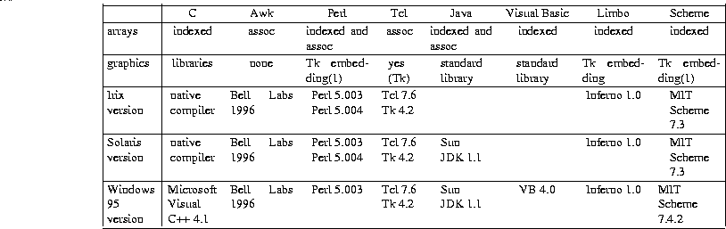
(1) Embeddings of Tk for Perl and Scheme appear to be experimental and
unsupported; we did not try them.
Table 1: Language Characteristics
Given more time and energy, one might test other scripting languages like Unix shells, Python and REXX, functional languages like SML, and interface-building languages like Delphi.
We ran our tests on three machines:
The difficulty of measuring program runtimes reliably and reproducibly is well known. We encountered the following obstacles, among others:
Times for C, Awk, Perl, and Tcl are the sum of ``user time'' and ``system time'' reported by the time command on Unix, or the total time reported by the MKS Toolkit time command on Windows 95. Thus, these include the time to invoke the language processor (for Awk, Perl, and Tcl) or to load and start the program (for C) as well as to read, process and execute the programs.
Times for Java, Visual Basic, and Limbo are computed by the internal program timer, such as Date in Java and Timer in VB. These exclude all startup times, which can amount to several seconds. For example, the Java interpreter exhibits a noticeable startup delay, presumably from unpacking the standard class files.
Timing Scheme programs posed a challenge. The internal timing function in MIT Scheme, runtime, reports values that are only loosely correlated with wall-clock time. (The runtime function appears in the standard Scheme text [Abelson 96], although it is not mentioned in the Scheme reference [Scheme 91].) On Irix and Windows, runtime reports values that are too low by 10 to 25 percent. On Solaris, runtime reports times that are too high by 30 to 65 percent. Consequently, we used a stopwatch to record Scheme times. The Scheme times also exclude the interpreter startup time.
To gather the timings, we ran each test several times, usually with a loop like this:
for i in 1 2 3 4 5 6 7 8 9 10 do time commandline done
The first tests exercise basic language features like arithmetic, loops and function calls.
First we test the implementation overhead of loop mechanisms by counting to n. Using large values of n helps to reduce noise in the timing measurements. Verifying that runtime is linear in the value of n helps to detect ambitious optimizers (see below).
Programs in most of the languages look similar. For example, here is the C version:
int i, n = atoi(argv[1]), sum = 0; for (i = 0; i < n; i++) sum++;
set sum 0
set n [lindex $argv 0]
for {set i 0} {$i < $n} {incr i} {
incr sum
}
(define sum 0) (define (tail-rec-aux i n) (if (< i n) (begin (set! sum (+ sum 1)) (tail-rec-aux (+ i 1) n)) sum)) (define (tail-rec-loop n) (tail-rec-aux 0 n))
For unreconstructed imperative-style programmers, Scheme defines an iteration construct (do), with which the loop above could be written as follows:
(define sum 0) (define (do-loop n) (do ((i 0 (+ i 1))) ((>= i n) sum) (set! sum (+ sum 1))))
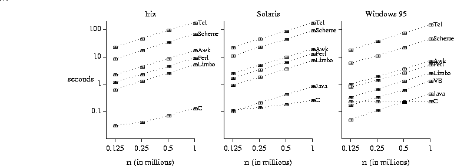
Basic loop test
This graph exhibits several features that are common to all of the graphs in this paper. The amount of computational work appears on the horizontal axis and runtime appears on the vertical axis. Both axes are plotted on a logarithmic scale, which allows us to display a wide range of data values. It would be convenient to choose input sizes that give reasonable runtimes, ideally around 10 seconds, but this ideal cannot be achieved when runtimes for different languages are four orders of magnitude apart.
We designed tests whose runtime should grow linearly with the size of the problem: runtime = m×size + b. Thus, if we choose size to be large enough to justify ignoring the fixed overhead (b), the log-log plot should show a straight line of unit slope. Exceptions indicate anomalous behavior that deserves further attention.
For example, on Windows 95 the line connecting C runtimes appears absolutely horizontal. In fact, runtime continues to be constant when n = 10^7 and n = 10^8. This happens because the optimizer eliminates the entire loop, replacing it by sum = n. When optimization is disabled, times on Windows 95 grow very slowly with n, from 0.25 seconds at n = 125,000 to 0.33 seconds at n = 10^6.
The graph for Windows 95 also shows clearly the advantage that Java and Visual Basic enjoy because our timings do not charge them for startup.
The pattern in these graphs reappears in many test results. Compiled native code (C) runs fastest; next fastest are interpreted byte codes (Java, Limbo, Visual Basic); next come interpreters that construct and execute an internal representation like an abstract syntax tree (Awk, Perl); slowest of all are interpreters that repeatedly scan the original source (Scheme, Tcl). Between each consecutive pair of stages there is a factor of 5-10 difference in runtime, with a total range that exceeds three orders of magnitude.
The next program evaluates Ackermann's function. Computing ack(3,k) = 2^(k+3)-3 requires at least 4^(k+1) function calls, and reaches a recursive depth of 2^(k+3)-1, so this test gives the function call mechanism a thorough workout. The code looks similar in most languages; here it is in C and Java:
int ack(int m, int n) {
if (m == 0)
return n+1;
else if (n == 0)
return ack(m-1, 1);
else
return ack(m-1, ack(m, n-1));
}
(define (ack m n)
(cond ((= m 0) (+ n 1))
((= n 0) (ack (- m 1) 1))
(else (ack (- m 1) (ack m (- n 1))))))
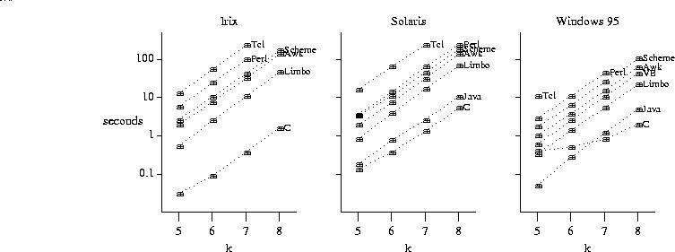
Ackermann's function test: ack(3,k)
For the largest problem size (k=8), the order of languages by increasing runtime remains the same across all three systems. (The basic loop test results also exhibited cross-system consistency, but with the languages in a different order.) Here, Scheme and Awk ran faster than Perl, and Limbo ran faster than Visual Basic. Such total consistency across systems is rare.
All of these languages provide richer arrays and strings than those in C, including perhaps associative arrays, dynamic arrays, storage management for strings, and garbage collection. This section investigates some of their properties.
The first program uses arrays as if they were indexed. It sets n elements of an array to integer values, then copies the array to another array beginning at index n-1. Here is the code in C, Awk, Java, and Limbo, for example:
for (i = 0; i < n; i++) x[i] = i; for (j = n-1; j >= 0; j--) y[j] = x[j];
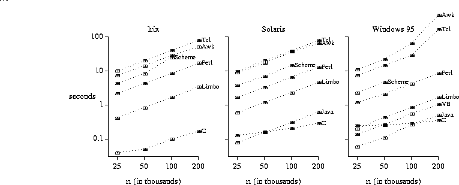
Indexed array test
This test turned out to be tougher than we expected. Languages that offer only associative arrays (like Awk and Tcl) typically use hash tables to implement the simple ``indexing'' needed for this example. This accounts for their large runtimes. Indeed, rewriting the Perl program to use associative arrays instead of indexed arrays triples its runtime on Unix, and quintuples it on Windows 95.
On the PC (with 32Mb of memory) Awk and Tcl thrash badly when n = 200,000, with runtimes about of about 450s (Awk) and 170s (Tcl).
The next test exercises several string operations: computing string lengths, concatenating strings, and extracting substrings. The program constructs the strings to avoid incurring I/O time by reading them from a file. Here is the Awk version:
for (j = 0; j < 10; j++) {
s = "abcdef"
while (length(s) <= n) {
s = "123" s "456" s "789"
s = substr(s, length(s)/2) substr(s, 1, length(s)/2)
}
}
The C program, on the other hand, keeps track of the length of the growing string:
int j, len, n = atoi(argv[1]);
char *s = NULL, *p;
for (j = 0; j < 10; j++) {
free(s);
s = strdup("abcdef");
while ((len = strlen(s)) <= n) {
p = (char *) malloc(2 * len + 10);
sprintf(p, "123%s456%s789", s, s);
free(s);
s = p;
len = strlen(s);
p = (char *) malloc(len + 2);
strcpy(p, s + len/2);
strncat(p + len/2, s, len/2+1);
free(s);
s = p;
}
}
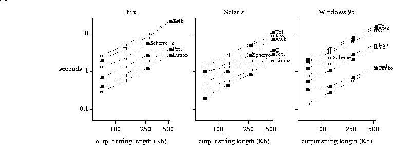
String test
The C runtimes are very sensitive to the details of the program: they get faster the fewer times the string is traversed from beginning to end (as in strlen, strcpy, and strcat). The graphs suggest that Awk, Tcl, and Java represent strings as null-terminated byte sequences, but Perl and Limbo include length information in their string data structures.
This test also exercises the storage allocator. Evidently the C library version, on which both Awk and Tcl rely, is slow. Perl may benefit from carrying its own version of malloc.
Several of these languages offer a built-in facility (variously called associative arrays, hash tables or hashes) that can be used to associate values with keys so that lookups can be performed in constant time. Our test program synthesizes key values from numbers, to avoid performing any I/O. In order to exercise both lookups that succeed and lookups that fail, the program stores keys created from the numbers 1 to n expressed as hexadecimal strings, but attempts to retrieve keys using the numbers 1 to n expressed as decimal strings. The program in Perl is
for ($i = 1; $i <= $n; $i++) {
$X{sprintf('%x', $i)} = $i;
}
for ($i = $n; $i > 0; $i--) {
if (defined $X{$i}) {
$c++;
}
}
for {set i 1} {$i <= $n} {incr i} {
set x([format "%x" $i]) $i
}
set c 0
for {set i $n} {$i > 0} {incr i -1} {
if {[info exists x($i)]} {
incr c
}
}
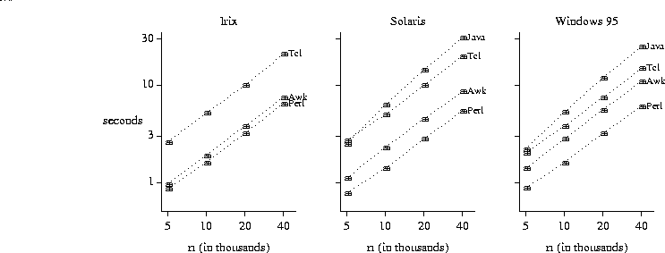
Associative array test
Languages not shown do not provide built-in associative arrays. Scheme does have built-in association lists, but their linear-time access is bound to make their performance compare unfavorably with hash tables.
Java's performance on this task is surprisingly poor. At first we thought that the Hashtable class used a poor hash function. But the runtime for the test increases when it is repeated, which suggests that there might also be a problem with memory management.
Tests in the preceding sections measured the speed of raw computation and memory management. By contrast, the programs in this section interact with the outside world, reading some significant amount of data, doing some computation on each data item, or writing some output. These operations are typical for Awk and Perl, although perhaps not for the volumes of data being used here; in that sense the tests may not be ``fair,'' but there must be some droit d'auteur.
The input data set for the first three tasks is derived from the King James Bible. The whole bible contains 31102 lines (one verse per line), 851820 words, and 4460056 characters. We also used the first half, quarter, and eighth of the bible as input for many tests.
The first task is to copy input to output, uninterpreted and unexamined, like the Unix cat command. Two other I/O tests include at least the input half of this operation.
In Awk, Perl, Tcl, Visual Basic, and Limbo, it is natural to write the program to work one line at a time. For example, here are the Awk, Perl, and Tcl versions:
{ print } # Awk
while (<>) { # Perl
print $_;
}
while {[gets stdin line] >= 0} { # Tcl
puts $line
}
main(int argc, char *argv[]) {
int c;
FILE *fp = stdin;
if (argc > 1)
fp = fopen(argv[1], "r");
while ((c = getc(fp)) != EOF)
putc(c, stdout);
}
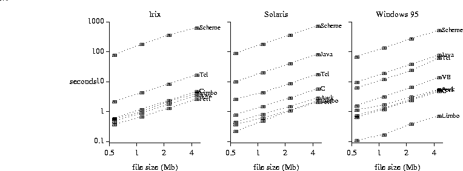
File copy test
The graphs show that programs that work at the level of lines usually run faster than programs that work at the level of characters. Of course, the line-at-a-time programs might be imposing restrictions on line length that are not revealed by using the King James Bible as input. (The longest verse is Esther 8:9, with 92 words and 529 characters.)
Thus, the graphs confirm the conventional wisdom that the choice of ``chunk'' size on which a program operates is important to its performance. Indeed, we can double the speed of the Perl program on Irix by changing it to read its input in one chunk. On the other hand, changing the Tcl program on Irix to read its input all at once makes it run about six times slower.
Our tests also show the importance of I/O buffering.
Unix systems implicitly buffer I/O that has been redirected from or to files, but this has not been carried over to Windows 95. This meant that our original Tcl program buffered its output one line at a time, and ran nearly 20 times slower than the version reported above. We modified it by explicitly requesting full buffering on stdout.
The Java times are for a program that uses the BufferedInputStream class. Using unbuffered classes for I/O increases the runtime by at least 50%. Even with buffering, Java programs incur large runtime because the I/O methods are interpreted, not compiled. The JDK1.1 version of Java also imposes some overhead associated with synchronizing multiple threads [Gosling 97].
The enormous Scheme runtimes appear to be caused by the lack of facilities for buffered input and output. We wrote a C program that reads and writes one byte at a time, and it took even longer to run than the Scheme program, so the Scheme implementation may be buffering deep inside.
The second test is to count lines, words, and characters in the input, as in the Unix wc program. This tests input speed and the ability to parse lines into smaller units. There are at least two basic approaches. In Awk, Perl, and Tcl, the natural program reads each line and splits it into ``fields,'' each of which corresponds to a word. Here is wc in Awk:
{ nl++; nw += NF; nc += length($0) + 1 }
END { print nl, nw, nc }
int nl = 0, nw = 0, nc = 0;
int b;
boolean inword = false;
while ((b = System.in.read()) > -1) {
++nc;
if (b == '\n')
++nl;
if (Character.isSpace((char)b))
inword = false;
else if (inword == false) {
++nw;
inword = true;
}
}
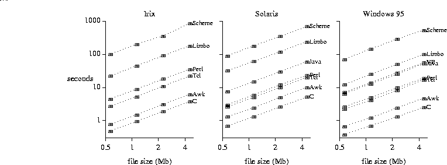
Word count test
The graphs confirm the importance of ``chunk size'' mentioned above for cat. Notice how much worse Visual Basic and Limbo fare when they operate on single characters instead of lines.
Since wc does more computation on the input than does cat, we expected it to have longer runtimes. About half the time, it does. But there are also places where wc is faster than cat, including Tcl on Windows 95, and Java on both Solaris and Windows 95; perhaps this is because the output of wc is only one line, much smaller than the output from cat.
The next test is to read the entire document into an array, then print out the lines in reverse order. This test checks the ability to build and access a very large array. The Awk version is
{ x[NR] = $0 }
END { for (i = NR; i >= 1; i--)
print x[i]
}
@a = <>;
for ($i = $#a; $i >= 0; $i--) {
print $a[$i];
}
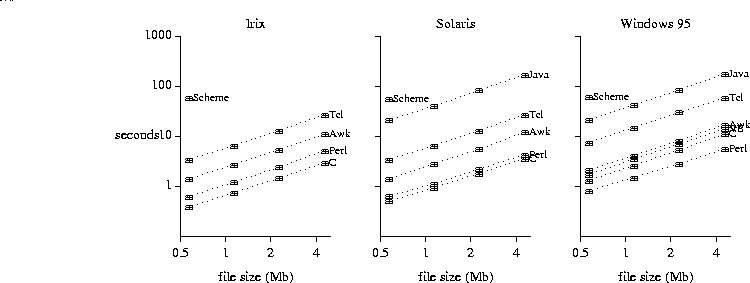
File reversal test
The order of languages by runtime is the same across all three systems. The word-counting task also exhibited cross-system consistency, but the languages appeared in a different order.
The next test exercises input, numeric conversion, and arithmetic. The programs read 100,000 floating point numbers like this
513.871 -175.726 308.634 ...
{ s += $1 }
END { print s }
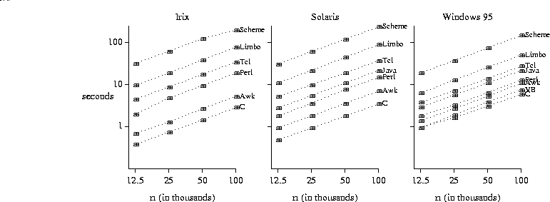
Sum test
The order of languages by runtime is comparable to the order for word counting, except for Tcl (which got slower) and Visual Basic (which got faster). In fact, our original Tcl program ran faster, but computed a different sum than any of the other programs; the timings shown are for a Tcl program that explicitly sets tcl_precision to 17.
There are two major components of user interfaces where speed matters most: manipulating text in a ``text widget,'' and drawing graphical objects like lines, rectangles and circles. Of course, operations like raising dialog boxes or pulling down menu items should happen quickly, but their runtime is of little significance to overall performance.
The text test appends n short lines to a text box, one at a time, and causes the last line to be displayed each time. The Tcl loop looks like this:
for {set i 1} {$i <= $n} {incr i} {
.t insert end "$i\n"
.t see end
update
}
for (i := 1; i <= n; i++) {
tk->cmd(t, ".t insert end " + string i + "\n");
tk->cmd(t, ".t see end");
tk->cmd(t, "update");
}
For i = 1 To n
bigtext.Text = bigtext.Text & CStr(i) & crlf
bigtext.SelStart = Len(bigtext.Text)
bigtext.SelLength = 0
DoEvents
Next i
for (int i = 1; i <= n; i++) {
bigtext.appendText(i + "\n");
Toolkit.getDefaultToolkit().sync();
}
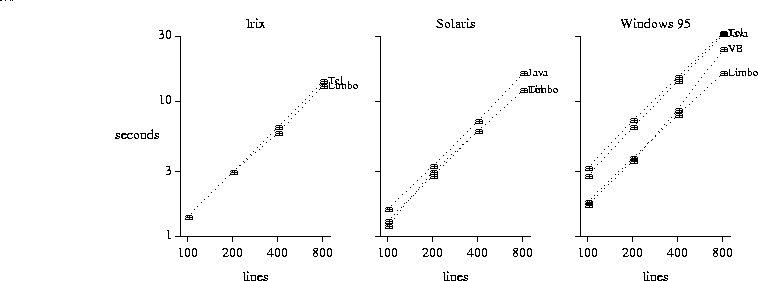
Text insertion test
We explicitly requested a screen update after each insertion, except in Visual Basic. Omitting these mandatory updates reduces runtimes significantly, because changes to the display are buffered so that only the final result is visible. Runtimes for this test are even less trustworthy than in earlier tests, since the display on Unix systems is managed by an X server that adds its own times into the mix. We used a stopwatch for Limbo on Unix, where reported times were unrelated to observed times.
Visual Basic has no method for appending text to a TextBox, so creating each new display would appear to be a quadratic process. In spite of this, Visual Basic runtimes are quite reasonable. The screen flashes and slows the display, apparently because Visual Basic redisplays the first line after each insertion. Visual Basic offers the alternative RichTextBox, which has more features (size, font, color), and also overcomes the 32,000 character limit of the regular TextBox. The same test takes about 30 percent longer with a RichTextBox.
The other major time-consuming activity for user interfaces is drawing graphical objects. By measuring the time it takes to draw n lines in a fan, each with a small colored circle at the end, we hope to capture only the most basic behavior. We have not attempted to animate a scene, move any objects, or interact with them after they have been drawn.
The Java version is representative:
for (int i = 1; i <= lim; i++) {
g.setColor(Color.blue);
g.drawLine(MINX, MINY, MAXX, MINY + (int) (i * dy));
g.setColor(Color.black);
g.fillOval(MAXX, MINY + (int) (i * dy), d, d);
g.setColor(Color.red);
g.drawOval(MAXX+2, MINY + (int) (i * dy)+2, d-4, d-4);
}
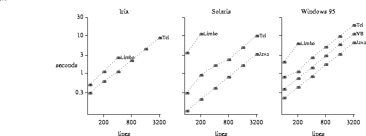
Line/circle drawing test
These times are the least reliable, since each reflects design decisions in the implementation of the corresponding system. The times reported by internal timers in the programs are a lower bound on what a user sees; we have not included any additional delay that occurs before the screen is updated.
Runtimes increase significantly if explicit updates are added after each drawing operation, as they might be in some kinds of animations. Java and Visual Basic appear to update the screen continuously, even though this behavior was not requested. Tk and Limbo updates are turned off and either happen all at once (Tk) or sporadically (Limbo).
In general, graphics facilities differ significantly; our tests focus on elementary tasks. Tk's canvas widget (through Tcl or Limbo) is far richer and more flexible than what is available in Java or Visual Basic, but this test does not exercise those capabilities at all.
In simpler times, ``compilation'' meant translation from source code via assembler into native instructions. A program was compiled once, perhaps with a bit of optimization, and the result was an executable binary image that never changed. Today, ``compilation'' is more complicated.
Scripting languages offer several intermediate positions, with multiple meanings even for ``interpretation.'' Tcl 7.6 and Scheme 7.3 are pure interpreters that repeatedly parse the source code as they run; this is extremely flexible, but slowest of all, as the graphs above show clearly. Awk translates its program into a tree that is walked during execution, Visual Basic creates an internal p-code representation, and Java and Limbo translate into byte codes for virtual machines (another form of p-code). Such preprocessing affords the speedups depicted in the graphs below.
In each case, it is possible to take the process further, either by translating the original program into something faster like C or C++, or by compiling the byte codes into machine instructions, either before execution or on demand during execution (``just in time compilation''). The graphs below show the results of some experiments with the ``compilation'' facilities provided by several of these languages:
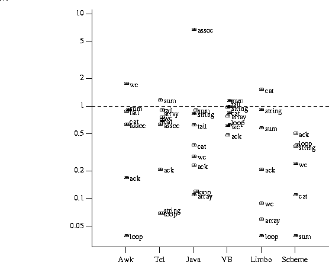
Compiled time / interpreted time, by language
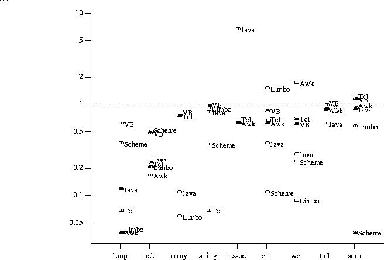
Compiled time / interpreted time, by task
These graphs reveal a number of interesting facts. Compilation usually, but not always, reduces runtime; in a few cases it made performance much worse. Most of the improvements are modest; some languages (like Limbo) exhibit a large range of improvement, while others (like Visual Basic) exhibit only a narrow range. Not surprisingly, the largest improvements are for the simplest language featuresthose most like regular programming languages; thus, the basic loop test and Ackermann's function improve most, while I/O tests improve least (unless the I/O system is also coded in the language in question, as it is with Limbo and seems to be with Java).
Clearly one might perform many other experiments, for instance to fill in more language features more systematically, to investigate regular expressions (in Awk, Perl and Tcl) or string searches (in Java and Visual Basic), or to study more user-interface components.
Another possibility would be to compare implementations of the same tools, since several of these languages are available in different implementations. For example, one might measure Awk, Gawk, Mawk and (on Windows 95) MKS Awk. There are many Java implementations, mainly focused on Windows. Unfortunately, these usually run only from within browsers, where security restrictions make it impossible to do the I/O tests.
Some of the I/O runtimes are remarkably long.
Published benchmarks rarely include I/O tests.
Perhaps if they did,
language implementations would perform better than they do.
The amount of real memory makes a large difference in PC applications; once a program starts paging, runtimes become long and erratic. This happened with (at least) Awk, Perl, and Tcl. Upgrading our PC from 16Mb to 32Mb sped up several tests by a factor of two or more. (All results here are for 32Mb.)
Memory management also matters.
It seems clear that some of our tests encountered
problems with the implementation of garbage collection.
The usual symptom is runtimes that increase during a series of tests.
Other factors are simply beyond control, and perhaps even beyond knowing.
Modern machines use several levels of cache
to make slow main memory appear to
operate nearly at the speed of cache memory,
but different processors (all with the same nominal speed)
have different amounts and kinds of cache.
The limitations of these results are important and bear repetition. These comparisons apply to specific language processors running on specific machines, and cannot be used to draw conclusions about overall performance differences of various languages in general. As we have worked on these experiments, we have been struck repeatedly by how often intuition is wrong. Some apparently small changes lead to unexpectedly large performance differences. For example,
Despite the preceding disclaimer, we essay the following summary of our observations:
Runtime is only one measure of a programming language;
another is suitability for task.
Scripting languages are meant to be easy to program in;
one sacrifices runtime and control for ease of expression.
We did not try to measure expressiveness, but
program size offers some clue.
The total number of lines of code for the non-graphics tests ranges from
66 for Awk, 96 of Perl, 105 of Tcl, 170 of C and Scheme,
200 of Visual Basic,
to around 350 for Java and Limbo.
Comparisons are a mainstay of computer literature. Conferences, journals, and magazines are full of tables and colorful charts that compare execution time or memory usage of one or more programs on different machines or implementations. In light of the variability in results that we saw, however, we wonder whether similar variation lurks behind published benchmark studies as well. It does seem wise to take all such experimentsincluding thesewith a large grain of salt.
Thanks to Jon Bentley, Mark-Jason Dominus, Lorenz Huelsbergen, Brian Lewis, Doug McIlroy, John Ousterhout, Rob Pike, Arnold Robbins, Wolfram Schneider, Howard Trickey, and Phil Wadler, for helpful suggestions and comments on the manuscript. We are also grateful to Phil Wadler for performing some experiments with ML, and to Will Clinger for improving our Scheme programs and for his experiments comparing a number of Scheme implementations on our test programs [Clinger 97].
The following lists standard references for the various languages and some related material on performance evaluation. These are not cited in the text.